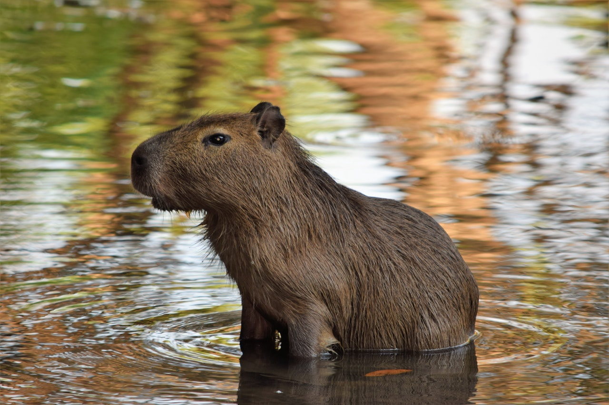
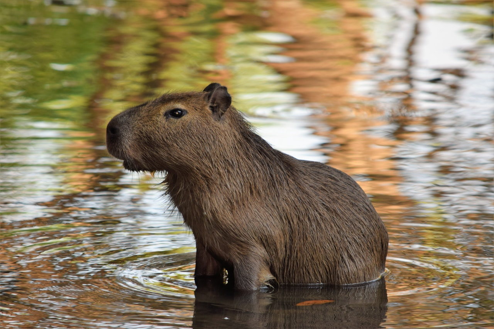

Laipni lūdzam kapibaru pasaulē!
Kapibara ir pasaulē lielākais grauzējs, pazīstams ar savu miermīlīgo dabu un draudzīgumu pret citām dzīvnieku sugām.
Kapibara ir pasaulē lielākais grauzējs, pazīstams ar savu miermīlīgo dabu un draudzīgumu pret citām dzīvnieku sugām.
